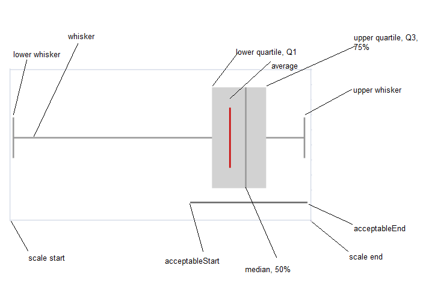

Box Plot Sparkline
In This Topic
You can create a box plot sparkline using the BoxPlotSparkline formula and cell values.

The box plot sparkline has the following options:
| Option | Description |
| points | A reference that represents the cell range that contains the values, such as "A1:A4". |
| boxPlotClass | Q1–>25% percentile, Q3–>75% percentile, IQR-->Q3-Q1. |
| 5ns: whisker ends at minimum and maximum, median, no outliers. | |
| 7ns: whisker ends at 2% percentile and 98% percentile, hatch marks at 9% percentile and 91% percentile, outliers beyond 2% percentile and 98% percentile. | |
| tukey: whisker ends at a value (the minimum of the points between Q1 and Q1 - 1.5*IQR, use the point if it exists or use the minimum) and a value (the maximum of the points between Q3 and Q3 + 1.5 * IQR, use the point if it exists or use the maximum), outliers beyond Q1 - 1.5*IQR and Q3 + 1.5 * IQR, and extreme outliers beyond Q1 - 3 * IQR and Q3 + 3 * IQR. | |
| bowley: whisker ends at minimum and maximum, hatch marks at 10% percentile and 90% percentile, no outliers. | |
| sigma3: whisker ends at a value (average - 2 * StDev > scaleStart ? average - 2 * StDev : minimum) and a value (average + 2 * StDev < scaleEnd ? average = 2 * StDev : maximum), box at average +/- stdev, outliers beyond average - 2 * StDev and average + 2 * StDev, and extreme outliers beyond average - 3 * StDev and average + 3 * StDev. | |
| showAverage | A boolean that represents whether to show the average. This setting is optional. The default value is FALSE. |
| scaleStart | A number or reference that represents the minimum boundary of the sparkline, such as 1 or "A6". This setting is optional. The default value is the minimum of all values. |
| scaleEnd | A number or reference that represents the maximum boundary of the sparkline, such as 8 or "A7". This setting is optional. The default value is the maximum of all values. |
| acceptableStart | A number or reference that represents the start of the acceptable line, such as 3 or "A8". This setting is optional. The default value is None. |
| acceptableEnd | A number or reference represents the end of the acceptable line, such as 5 or "A9". This setting is optional. The default value is None. |
| colorScheme | A string that represents the color of the sparkline's box. This setting is optional. The default value is "#D2D2D2". |
| style |
A number or reference that represents the sparkline style. This setting is optional. The default value is 0 (Classical). The style can be 0 or 1. 0: the whisker is a line and outlier is a circle. 1: the whisker is a rectangle and outlier is a line. |
| vertical | A boolean that represents whether to display the sparkline vertically. This setting is optional. The default value is FALSE. |
The following image displays the sparkline areas based on the 5ns option.

The box plot sparkline formula has the following format:
=BOXPLOTSPARKLINE(points, boxPlotClass, showAverage, scaleStart, scaleEnd, acceptableStart, acceptableEnd, colorScheme, style, vertical)
Using Code
The following code creates a box plot sparkline.
| JavaScript |
Copy Code
|
|---|---|
activeSheet.setValue(0, 2, 60);
activeSheet.setValue(0, 3, 78);
activeSheet.setValue(0, 4, 54);
activeSheet.setValue(0, 5, 0);
activeSheet.setValue(0, 6, 99);
activeSheet.setValue(0, 7, 86);
activeSheet.setValue(0, 8, 98);
activeSheet.setValue(0, 9, 75);
activeSheet.setValue(0, 10, 76);
activeSheet.setValue(0, 11, 80);
activeSheet.setValue(0, 12, 85);
activeSheet.setValue(0, 13, 86);
activeSheet.setValue(0, 14, 65);
activeSheet.setValue(0, 15, 88);
activeSheet.getRange(0, -1, 1, -1, GC.Spread.Sheets.SheetArea.viewport).height(90);
activeSheet.setFormula(0,1,'=BOXPLOTSPARKLINE(C1:P1,"5ns",TRUE,0,100,-1,100,"red",0,FALSE)');
|
|
See Also